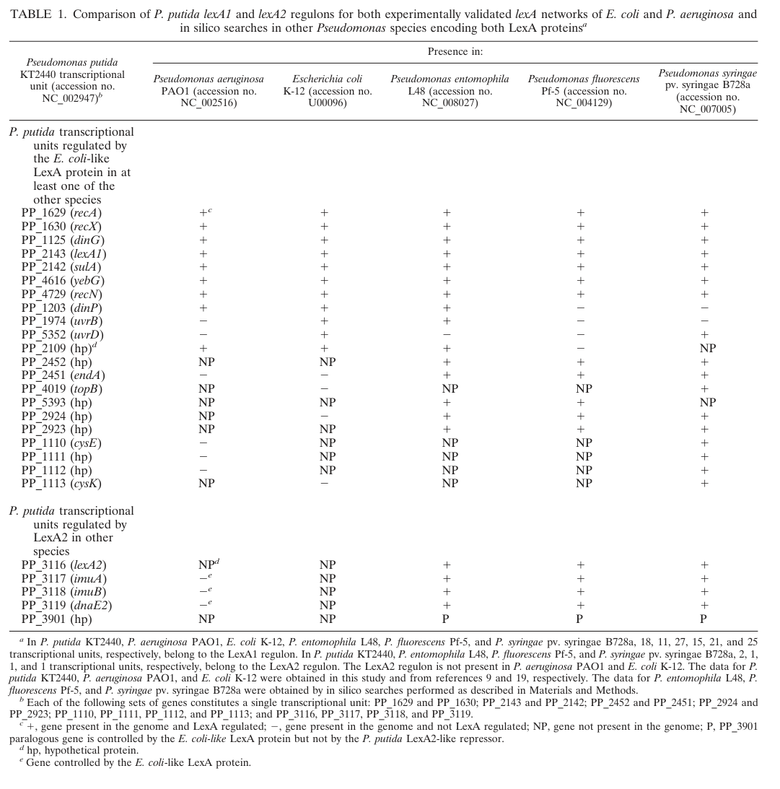

recX encodes RecX (PP_1630), a small cytoplasmic regulatory protein of the RecX family that modulates (and predominantly negatively regulates) the RecA recombinase. RecX binds RecA nucleoprotein filaments and promotes their disassembly/limits their extension, thereby tuning homologous recombination and the timing/magnitude of the LexA-controlled SOS DNA-damage response. In P. putida KT2440, recX is co-transcribed with recA (PP_1629) as a single transcriptional unit within the LexA1 (SOS) regulon. Direct biochemical/genetic data are from RecX-family orthologs (E. coli, B. subtilis); KT2440-specific evidence is currently limited to genomic context and SOS-regulon membership.
Definition: Modulates the activity of the RecA recombinase, for example by binding RecA nucleoprotein filaments to promote their disassembly or limit their extension, thereby regulating RecA-dependent DNA pairing, strand exchange, ATPase and co-protease activities.
Justification: GOA captures RecX only at the biological-process level (regulation of DNA repair). A RecA-specific enzyme-regulator molecular-function term would represent the core molecular role described in UniProt and consistently reported in the RecX-family literature.
Parent term: enzyme regulator activity
Supporting Evidence:
| GO Term | Evidence | Action | Reason |
|---|---|---|---|
|
GO:0005737
cytoplasm
|
IEA
GO_REF:0000120 |
KEEP AS NON CORE |
Summary: RecX is a soluble cytoplasmic protein that acts on RecA nucleoprotein filaments; the cytoplasm annotation is correct but is not the core function. Family-level evidence (B. subtilis RecX-YFP) shows RecX is intracellular and nucleoid-associated near RecA filaments, with no signal peptide or membrane association, consistent with a cytosolic location.
Reason: RecX is a cytoplasmic DNA-repair regulator; the location is accurate but the core biological role is RecA filament modulation rather than the compartment itself.
Supporting Evidence:
file:PSEPK/recX/recX-uniprot.txt
SUBCELLULAR LOCATION: Cytoplasm
file:PSEPK/recX/recX-goa.tsv
GO:0005737 cytoplasm
file:PSEPK/recX/recX-deep-research-falcon.md
most evidence-consistent localization for *P. putida* RecX is **intracellular (cytosol) with functional association to nucleoid/RecA filament sites**
|
|
GO:0006282
regulation of DNA repair
|
IEA
GO_REF:0000120 |
ACCEPT |
Summary: Regulation of DNA repair is the correct biological-process annotation for RecX. RecX modulates RecA activity, controlling the magnitude and timing of RecA-dependent homologous recombination and SOS signaling. In P. putida KT2440 specifically, recX lies in the LexA1-controlled SOS regulon co-transcribed with recA, supporting a role in DNA-damage-inducible recombination control.
Reason: Conserved RecX-family function (negative modulation of the RecA recombinase that drives recombinational DNA repair) plus KT2440-specific SOS-regulon membership together support regulation of DNA repair as a core process.
Supporting Evidence:
file:PSEPK/recX/recX-uniprot.txt
Modulates RecA activity
file:PSEPK/recX/recX-goa.tsv
GO:0006282 regulation of DNA repair
file:PSEPK/recX/recX-deep-research-falcon.md
controlling the magnitude/timing of RecA-dependent recombination and SOS activation
file:PSEPK/recX/recX-deep-research-falcon.md
co-transcribed with **recA / PP_1629** as a single transcriptional unit within the **LexA1 (SOS) regulon**
|
Q: Does KT2440 RecX inhibit RecA filament extension, promote disassembly, or modulate a different RecA activity in vivo, and is its net effect on homologous recombination inhibitory or facilitative as seen in some other bacteria?
Experiment: Measure RecA filament dynamics (single-molecule or in-cell imaging) and DNA-damage survival/recombination phenotypes in recX deletion and overexpression strains of P. putida KT2440.
Type: RecA filament and DNA-damage survival assay
The research report should be a detailed narrative explaining the function, biological processes, and localization of the gene product. Citations should be given for all claims.
You should prioritize authoritative reviews and primary scientific literature when conducting research. You can supplement
this with annotations you find in gene/protein databases, but these can be outdated or inaccurate.
We are specifically interested in the primary function of the gene - for enzymes, what reaction is catalyzed, and what is the substrate specificity? For transporters, what is the substrate? For structural proteins or adapters, what is the broader structural role? For signaling molecules, what is the role in the pathway.
We are interested in where in or outside the cell the gene product carries out its function.
We are also interested in the signaling or biochemical pathways in which the gene functions. We are less interested in broad pleiotropic effects, except where these elucidate the precise role.
Include evidence where possible. We are interested in both experimental evidence as well as inference from structure, evolution, or bioinformatic analysis. Precise studies should be prioritized over high-throughput, where available.
The UniProt accession Q88ME3 corresponds to RecX, a regulatory protein of the RecX family encoded by recX / PP_1630 in Pseudomonas putida KT2440, co-transcribed with recA / PP_1629 as a single transcriptional unit within the LexA1 (SOS) regulon in this strain. (abella2007cohabitationoftwo pages 4-4)
Direct experimental literature specific to P. putida KT2440 RecX protein function, localization, or recX mutant phenotypes was not identified in the retrieved corpus; therefore, functional annotation beyond regulation/genomic context relies on well-supported RecX family biology from other bacteria (notably E. coli and Bacillus subtilis), which consistently positions RecX as a modulator/negative regulator of RecA nucleoprotein filaments, thereby tuning homologous recombination and SOS signaling. (alekseev2022anewinsight pages 1-2, cardenas2012recxfacilitateshomologous pages 4-6)
Bacterial recombinational DNA repair is driven by RecA, which forms a nucleoprotein filament on ssDNA and catalyzes homology search and strand exchange; RecA filaments also act as a co-protease to trigger LexA self-cleavage, thereby inducing the SOS response. RecA function is therefore strongly dependent on how efficiently filaments assemble, transition between conformations, and disassemble. (alekseev2022anewinsight pages 1-2, cardenas2012recxfacilitateshomologous pages 4-6)
RecX is a conserved bacterial protein family whose primary role is to modulate (often inhibit) RecA filament growth and/or stability, with the net effect of controlling the magnitude/timing of RecA-dependent recombination and SOS activation. (alekseev2022anewinsight pages 1-2, cardenas2012recxfacilitateshomologous pages 4-6)
Importantly, RecX is best described as a RecA filament “modulator” rather than a simple “off switch”: in some systems, RecX inhibition of RecA can paradoxically improve recombination outcomes by preventing unproductive or deleterious RecA filament states. (cardenas2012recxfacilitateshomologous pages 1-2)
Abella et al. experimentally mapped LexA regulons in P. putida KT2440 and explicitly identified PP_1630 as recX, with PP_1629 (recA) and PP_1630 (recX) forming a single transcriptional unit (operon). (abella2007cohabitationoftwo pages 4-4)
In P. putida KT2440, the recA–recX transcriptional unit belongs to the LexA1 regulon, and is discussed among units induced after mitomycin C treatment (a DNA damaging agent commonly used to induce SOS). (abella2007cohabitationoftwo pages 4-4)
Visual evidence: Cropped regions of the paper’s Table 1 and Figure 1 show PP_1630 annotated as recX and the recA–recX transcriptional unit as part of the LexA1 regulon. (abella2007cohabitationoftwo media 03faf27d, abella2007cohabitationoftwo media 55b1231c)
Single-molecule experiments with E. coli proteins show that RecX binds RecA filaments and drives net filament shortening, consistent with stimulation of disassembly; RecX preferentially binds the inactive/post-hydrolysis RecA filament state and slows the transition to an active state. (alekseev2022anewinsight pages 8-10, alekseev2022anewinsight pages 3-4)
Quantitative kinetics example (single-molecule): under conditions where RecA–dsDNA filaments were preassembled, transfer to 200 nM RecX caused filament reduction to bare DNA length within ~30 s, and the authors report the disassembly/shortening effect on dsDNA filaments was ~100× faster than on ssDNA under their conditions. (alekseev2022anewinsight pages 8-10)
Mechanistic models for RecX include (i) a capping model (binding at the growing filament end to block extension) and (ii) an internal binding/groove binding (“nicking”) model that locally destabilizes the filament and increases effective disassembly ends; concentration dependence and structural considerations support that both behaviors may contribute depending on system context and RecX concentration. (alekseev2022anewinsight pages 1-2, alekseev2022anewinsight pages 3-4)
In B. subtilis, RecX influences when SOS is triggered by restraining RecA filament behavior: in ΔrecX cells exposed to mitomycin C, RecA accumulation is increased at low damage levels (e.g., ~18,000 RecA monomers/cell at 0.07 mM MMC vs basal ~4,500 monomers/cell in wild type), while maximal induction occurs around 0.6 mM MMC with ~4–6× induction. (cardenas2012recxfacilitateshomologous pages 4-6)
These data support a conserved conceptual role for RecX: buffering the RecA filament system to prevent premature or excessive SOS activation while maintaining productive recombination capacity. (cardenas2012recxfacilitateshomologous pages 4-6, cardenas2012recxfacilitateshomologous pages 1-2)
The strongest P. putida KT2440-specific conclusion supported by evidence is that recX (PP_1630) is part of a LexA1-controlled DNA-damage/SOS transcriptional program, co-regulated with recA. (abella2007cohabitationoftwo pages 4-4)
Family-level evidence indicates RecX modulates RecA co-protease activity (LexA cleavage) by controlling formation and persistence of extended RecA–ssDNA filaments needed for SOS signaling. (cardenas2012recxfacilitateshomologous pages 2-3, alekseev2022anewinsight pages 1-2)
In bacteria, RecX impacts homologous recombination by shaping RecA filament dynamics, affecting recombination repair and genetic exchange. (cardenas2012recxfacilitateshomologous pages 1-2)
A 2024 authoritative review (FEMS Microbiology Reviews) places RecX among RecA “modulators” important during replication stress, describing RecX as a negative modulator that can actively disassemble RecA nucleoprotein filaments and that counterbalance with positive modulators (e.g., RecF and RarA) is crucial for RecA filament/thread dynamics and downstream SOS signaling. (carrasco2024processingofstalled pages 6-7)
This recent synthesis also reports that RecX is considered to physically interact with RecA (in the B. subtilis model) and participates in genetic interaction networks affecting replication-stress outcomes. (carrasco2024processingofstalled pages 5-6)
No RecX cellular localization microscopy in P. putida KT2440 was identified in the retrieved literature.
In B. subtilis, RecX-YFP forms discrete intracellular foci, frequently nucleoid-associated and sometimes polar (competence-related), and appears after RecA nucleation; RecX foci co-localize near RecA thread structures during DNA damage responses. (cardenas2012recxfacilitateshomologous pages 10-11, cardenas2012recxfacilitateshomologous pages 6-7)
Quantitative localization statistics (B. subtilis): RecX-YFP foci were observed in ~8–10% of competent cells, usually one focus/cell (73%); after DNA addition, nucleoid-associated foci increased (46% → 72%) and polar foci decreased (27% → 13%). (cardenas2012recxfacilitateshomologous pages 10-11)
Given (i) the RecX role is mediated by direct interactions with RecA filaments (cytosolic/nucleoid-associated structures) and (ii) the absence of signal peptide or membrane-associated function in the RecX mechanistic literature, the most evidence-consistent localization for P. putida RecX is intracellular (cytosol) with functional association to nucleoid/RecA filament sites, especially under DNA damage/replication stress conditions. (cardenas2012recxfacilitateshomologous pages 10-11, carrasco2024processingofstalled pages 6-7)
The 2024 FEMS Microbiology Reviews article integrates RecX into a broader replication stress network, emphasizing RecX as an active negative regulator/disassembly factor for RecA filaments, and highlighting balancing interactions with positive modulators (RecF/RarA) that collectively shape RecA filament length/lifetime, thereby tuning SOS and recombination-based fork processing. (carrasco2024processingofstalled pages 6-7, carrasco2024processingofstalled pages 9-10)
No 2023–2024 studies directly characterizing PP_1630/Q88ME3 RecX in P. putida KT2440 (biochemistry, structures, localization, or mutant phenotypes) were found in the retrieved corpus. The most solid P. putida-specific evidence remains the regulon/operon mapping from 2007. (abella2007cohabitationoftwo pages 4-4)
RecX modulates RecA, which is central to DNA repair, genome stability, SOS mutagenesis programs, and recombination-based genetic exchange; therefore, RecX is relevant to:
- Strain genome stability during industrial cultivation (e.g., limiting unwanted recombination or stress-induced mutagenesis),
- Recombineering / transformation efficiencies (RecA filament regulation affects recombination-based DNA integration),
- Antibacterial strategies aimed at DNA repair/SOS control (conceptually, by influencing RecA filament dynamics).
Within the retrieved evidence, direct application data were not P. putida-specific; however, B. subtilis experiments show RecX strongly impacts transformation frequencies (chromosomal and plasmid), illustrating the magnitude with which RecX-family regulation can influence genetic engineering outcomes in bacteria. (cardenas2012recxfacilitateshomologous pages 6-7, cardenas2012recxfacilitateshomologous pages 1-2)
Across mechanistic studies and reviews, the consensus is that RecX is part of a layered regulatory architecture that controls RecA filaments (assembly, extension, disassembly, conformational switching). This view is supported by:
- Single-molecule mechanistic dissection (RecX binds specific RecA filament states; cooperativity; ATP-hydrolysis dependence for certain destabilization behaviors). (alekseev2022anewinsight pages 8-10, alekseev2022anewinsight pages 3-4)
- Genetic/cytological systems biology in vivo showing that RecX affects SOS thresholds and recombination/transformation outcomes, and that RecX is temporally coordinated with RecA/RecF. (cardenas2012recxfacilitateshomologous pages 6-7, cardenas2012recxfacilitateshomologous pages 4-6)
- 2024 review-level synthesis integrating RecX into replication fork stress processing and emphasizing its role as a modulator/disassembly factor rather than a simple inhibitor. (carrasco2024processingofstalled pages 6-7)
Selected quantitative findings (mostly from non-P. putida model systems):
- RecX-driven filament disassembly (single-molecule, E. coli): 200 nM RecX collapses RecA–dsDNA filaments to bare DNA length in ~30 s; dsDNA filament shortening reported ~100× faster than ssDNA under these conditions. (alekseev2022anewinsight pages 8-10)
- Cooperativity (single-molecule, E. coli): concentration dependence fit with Hill coefficient 2.0 ± 0.3. (alekseev2022anewinsight pages 3-4)
- SOS/RecA levels (in vivo, B. subtilis): ~18,000 RecA monomers/cell at 0.07 mM MMC in ΔrecX vs ~4,500 monomers/cell basal in wild type; maximal induction at ~0.6 mM MMC gives ~4–6× induction. (cardenas2012recxfacilitateshomologous pages 4-6)
- Transformation impact (in vivo, B. subtilis): ΔrecX reduces chromosomal transformation to ~0.5% of wild type and plasmid transformation to ~1.8% in one dataset; broader summary indicates order-of-magnitude losses can occur depending on allele/background. (cardenas2012recxfacilitateshomologous pages 6-7, alekseev2022anewinsight pages 1-2)
- Localization frequency (in vivo, B. subtilis): RecX-YFP foci in ~8–10% of competent cells; distribution shifts toward nucleoid-associated foci after DNA addition. (cardenas2012recxfacilitateshomologous pages 10-11)
| Evidence type | Key finding (function/regulation/localization) | Quantitative/phenotypic data | Pathway/process link (SOS, homologous recombination, transformation) | Primary source with year and URL | Notes/limitations |
|---|---|---|---|---|---|
| P. putida direct | PP_1630 is recX in Pseudomonas putida KT2440 and is co-transcribed with recA (PP_1629) as a single transcriptional unit in the LexA1 regulon (abella2007cohabitationoftwo pages 4-4, abella2007cohabitationoftwo media 03faf27d) | No RecX-specific phenotype or protein abundance reported in the cited excerpt (abella2007cohabitationoftwo pages 4-4) | SOS / DNA-damage regulon | Abella et al., 2007, https://doi.org/10.1128/JB.01213-07 | Strongest organism-specific evidence; establishes identity and regulation, but not biochemical mechanism or localization in P. putida (abella2007cohabitationoftwo pages 4-4) |
| P. putida direct | The recA-recX transcriptional unit belongs to the LexA1 regulon and is described among genes induced after mitomycin C treatment, supporting DNA-damage responsiveness (abella2007cohabitationoftwo pages 4-4) | Mitomycin C induction is indicated qualitatively; no fold-change for recX given in the excerpt (abella2007cohabitationoftwo pages 4-4) | SOS / DNA damage response | Abella et al., 2007, https://doi.org/10.1128/JB.01213-07 | Evidence is transcriptional/regulon mapping, not direct RecX functional assay (abella2007cohabitationoftwo pages 4-4) |
| Review-mechanistic / other species foundation | RecX is a conserved small negative regulator/modulator of RecA that suppresses RecA ATPase, DNA pairing, strand exchange, and co-protease activities; in E. coli recX is SOS-regulated, downstream of recA, and co-transcribed with it (alekseev2022anewinsight pages 1-2, alekseev2022anewinsight pages 18-19) | In E. coli, RecX level is reported as ~500-fold lower than RecA (alekseev2022anewinsight pages 1-2) | SOS, homologous recombination | Alekseev et al., 2022, https://doi.org/10.7554/eLife.78409 | Indirect for P. putida but highly relevant because P. putida recX is also recA-linked and LexA-regulated (alekseev2022anewinsight pages 1-2, abella2007cohabitationoftwo pages 4-4) |
| Other species experimental | RecX promotes net disassembly of RecA filaments and preferentially binds inactive/post-hydrolysis RecA filament states, slowing transition to active filaments (alekseev2022anewinsight pages 8-10, alekseev2022anewinsight pages 3-4) | On RecA-dsDNA filaments, 200 nM RecX reduced filaments to bare-dsDNA length within ~30 s; disassembly on dsDNA was ~100× faster than on ssDNA; concentration dependence fit a Hill coefficient of 2.0 ± 0.3 (alekseev2022anewinsight pages 8-10, alekseev2022anewinsight pages 3-4) | Homologous recombination / RecA filament control | Alekseev et al., 2022, https://doi.org/10.7554/eLife.78409 | Single-molecule work was done with E. coli proteins, not P. putida RecX (alekseev2022anewinsight pages 8-10, alekseev2022anewinsight pages 3-4) |
| Other species experimental | Mechanistic models for RecX action include capping the growing 3′ end of RecA filaments and/or internal nicking/groove binding that creates additional disassembling ends (alekseev2022anewinsight pages 1-2, alekseev2022anewinsight pages 3-4) | Faster depolymerization at higher RecX concentrations supports a nonexclusive internal-binding model (alekseev2022anewinsight pages 1-2, alekseev2022anewinsight pages 3-4) | Homologous recombination / SOS tuning | Alekseev et al., 2022, https://doi.org/10.7554/eLife.78409 | Mechanistic inference is broad across bacteria; direct structural confirmation for P. putida Q88ME3 is lacking (alekseev2022anewinsight pages 1-2, alekseev2022anewinsight pages 3-4) |
| Other species experimental | RecX facilitates homologous recombination by modulating RecA filament length/packing rather than simply blocking RecA; it can prevent inappropriate or overextended RecA filaments (cardenas2012recxfacilitateshomologous pages 1-2, cardenas2012recxfacilitateshomologous pages 11-12) | In Bacillus subtilis, loss of RecX severely impaired natural transformation; chromosomal transformation dropped to ~0.5% of wild type and plasmid transformation to ~1.8% in one dataset; absence of RecX caused ~200-fold lower chromosomal transformation in summary statements (cardenas2012recxfacilitateshomologous pages 6-7, alekseev2022anewinsight pages 1-2) | Homologous recombination, transformation | Cárdenas et al., 2012, https://doi.org/10.1371/journal.pgen.1003126 | Strong genetic evidence, but from Gram-positive Bacillus; phenotype magnitude may not transfer directly to P. putida (cardenas2012recxfacilitateshomologous pages 6-7, cardenas2012recxfacilitateshomologous pages 1-2) |
| Other species experimental | RecX modulates SOS induction threshold by restraining RecA filament behavior; without RecX, RecA filaments persist longer and SOS can be induced at lower damage levels (cardenas2012recxfacilitateshomologous pages 3-4, cardenas2012recxfacilitateshomologous pages 10-11, cardenas2012recxfacilitateshomologous pages 4-6) | In B. subtilis ΔrecX, RecA accumulated to ~18,000 monomers/cell at 0.07 mM MMC versus basal ~4,500 monomers/cell in wild type; maximal induction at ~0.6 mM MMC was ~4–6× (cardenas2012recxfacilitateshomologous pages 4-6) | SOS / DNA damage response | Cárdenas et al., 2012, https://doi.org/10.1371/journal.pgen.1003126 | Indicates RecX tunes SOS rather than acting as a repair enzyme; indirect for P. putida (cardenas2012recxfacilitateshomologous pages 4-6) |
| Other species experimental | Cellular localization studies place RecX in the cytoplasm/nucleoid-associated compartment, forming discrete foci on the nucleoid and sometimes at poles, often near RecA structures after DNA damage or during competence (cardenas2012recxfacilitateshomologous pages 10-11, cardenas2012recxfacilitateshomologous pages 6-7, cardenas2012recxfacilitateshomologous pages 1-2) | In competent B. subtilis cells, RecX-YFP foci occurred in ~8–10% of cells; usually one focus/cell (73%); after DNA addition, nucleoid-associated foci increased from 46% to 72%, while pole-localized foci decreased from 27% to 13%; RecX overlapped/was adjacent to RecA in 41% of cells with RecA signal and in 91% of cells showing RecX foci (cardenas2012recxfacilitateshomologous pages 10-11, cardenas2012recxfacilitateshomologous pages 6-7) | Homologous recombination, transformation | Cárdenas et al., 2012, https://doi.org/10.1371/journal.pgen.1003126 | No direct localization data for P. putida; likely intracellular and nucleoid-associated by homology/function (cardenas2012recxfacilitateshomologous pages 10-11, cardenas2012recxfacilitateshomologous pages 6-7) |
| Review-mechanistic / other species foundation | RecX family proteins can differ in length across taxa; proteobacterial RecX proteins are shorter than many Gram-positive homologs, supporting family-level conservation with possible mechanistic variation (cardenas2012recxfacilitateshomologous pages 1-2, cardenas2012recxfacilitateshomologous pages 4-6) | B. subtilis RecX is 264 aa, whereas proteobacterial RecX proteins are noted as shorter (~180 aa class) (cardenas2012recxfacilitateshomologous pages 1-2, cardenas2012recxfacilitateshomologous pages 4-6) | Homologous recombination regulator evolution | Cárdenas et al., 2012, https://doi.org/10.1371/journal.pgen.1003126 | Supports cautious transfer of family-level function to P. putida Q88ME3 while acknowledging species-specific differences (cardenas2012recxfacilitateshomologous pages 1-2, cardenas2012recxfacilitateshomologous pages 4-6) |
| Review-mechanistic / other species foundation | Functional outcomes of RecX can be context dependent: despite inhibiting RecA filament activity, RecX may improve recombination efficiency or genome stability by preventing maladaptive RecA assemblies (alekseev2022anewinsight pages 18-19, alekseev2022anewinsight pages 1-2, cardenas2012recxfacilitateshomologous pages 1-2) | Reported outcomes across species include reduced UV resistance when RecX is lost or overexpressed, and altered transformation/recombination efficiencies (alekseev2022anewinsight pages 1-2, cardenas2012recxfacilitateshomologous pages 1-2) | SOS, homologous recombination, transformation | Alekseev et al., 2022, https://doi.org/10.7554/eLife.78409; Cárdenas et al., 2012, https://doi.org/10.1371/journal.pgen.1003126 | Important for annotation: RecX is best described as a RecA filament modulator, not simply an inhibitor (alekseev2022anewinsight pages 1-2, cardenas2012recxfacilitateshomologous pages 1-2) |
Table: This table summarizes the strongest available evidence for functional annotation of RecX (recX/PP_1630/Q88ME3) in Pseudomonas putida KT2440, separating direct organism-specific findings from indirect but mechanistically informative studies in other bacteria. It is useful for distinguishing what is experimentally established in P. putida from what is inferred from conserved RecX family biology.
References
(abella2007cohabitationoftwo pages 4-4): Marc Abella, Susana Campoy, Ivan Erill, Fernando Rojo, and Jordi Barbé. Cohabitation of two differentlexaregulons inpseudomonas putida. Dec 2007. URL: https://doi.org/10.1128/jb.01213-07, doi:10.1128/jb.01213-07. This article has 44 citations and is from a peer-reviewed journal.
(alekseev2022anewinsight pages 1-2): Aleksandr Alekseev, Georgii Pobegalov, Natalia Morozova, Alexey Vedyaykin, Galina Cherevatenko, Alexander Yakimov, Dmitry Baitin, and Mikhail Khodorkovskii. A new insight into reca filament regulation by recx from the analysis of conformation-specific interactions. Jun 2022. URL: https://doi.org/10.7554/elife.78409, doi:10.7554/elife.78409. This article has 17 citations and is from a domain leading peer-reviewed journal.
(cardenas2012recxfacilitateshomologous pages 4-6): Paula P. Cárdenas, Begoña Carrasco, Clarisse Defeu Soufo, Carolina E. César, Katharina Herr, Miriam Kaufenstein, Peter L. Graumann, and Juan C. Alonso. Recx facilitates homologous recombination by modulating reca activities. PLoS Genetics, 8:e1003126, Dec 2012. URL: https://doi.org/10.1371/journal.pgen.1003126, doi:10.1371/journal.pgen.1003126. This article has 71 citations and is from a domain leading peer-reviewed journal.
(cardenas2012recxfacilitateshomologous pages 1-2): Paula P. Cárdenas, Begoña Carrasco, Clarisse Defeu Soufo, Carolina E. César, Katharina Herr, Miriam Kaufenstein, Peter L. Graumann, and Juan C. Alonso. Recx facilitates homologous recombination by modulating reca activities. PLoS Genetics, 8:e1003126, Dec 2012. URL: https://doi.org/10.1371/journal.pgen.1003126, doi:10.1371/journal.pgen.1003126. This article has 71 citations and is from a domain leading peer-reviewed journal.
(abella2007cohabitationoftwo media 03faf27d): Marc Abella, Susana Campoy, Ivan Erill, Fernando Rojo, and Jordi Barbé. Cohabitation of two differentlexaregulons inpseudomonas putida. Dec 2007. URL: https://doi.org/10.1128/jb.01213-07, doi:10.1128/jb.01213-07. This article has 44 citations and is from a peer-reviewed journal.
(abella2007cohabitationoftwo media 55b1231c): Marc Abella, Susana Campoy, Ivan Erill, Fernando Rojo, and Jordi Barbé. Cohabitation of two differentlexaregulons inpseudomonas putida. Dec 2007. URL: https://doi.org/10.1128/jb.01213-07, doi:10.1128/jb.01213-07. This article has 44 citations and is from a peer-reviewed journal.
(alekseev2022anewinsight pages 8-10): Aleksandr Alekseev, Georgii Pobegalov, Natalia Morozova, Alexey Vedyaykin, Galina Cherevatenko, Alexander Yakimov, Dmitry Baitin, and Mikhail Khodorkovskii. A new insight into reca filament regulation by recx from the analysis of conformation-specific interactions. Jun 2022. URL: https://doi.org/10.7554/elife.78409, doi:10.7554/elife.78409. This article has 17 citations and is from a domain leading peer-reviewed journal.
(alekseev2022anewinsight pages 3-4): Aleksandr Alekseev, Georgii Pobegalov, Natalia Morozova, Alexey Vedyaykin, Galina Cherevatenko, Alexander Yakimov, Dmitry Baitin, and Mikhail Khodorkovskii. A new insight into reca filament regulation by recx from the analysis of conformation-specific interactions. Jun 2022. URL: https://doi.org/10.7554/elife.78409, doi:10.7554/elife.78409. This article has 17 citations and is from a domain leading peer-reviewed journal.
(cardenas2012recxfacilitateshomologous pages 2-3): Paula P. Cárdenas, Begoña Carrasco, Clarisse Defeu Soufo, Carolina E. César, Katharina Herr, Miriam Kaufenstein, Peter L. Graumann, and Juan C. Alonso. Recx facilitates homologous recombination by modulating reca activities. PLoS Genetics, 8:e1003126, Dec 2012. URL: https://doi.org/10.1371/journal.pgen.1003126, doi:10.1371/journal.pgen.1003126. This article has 71 citations and is from a domain leading peer-reviewed journal.
(carrasco2024processingofstalled pages 6-7): Begoña Carrasco, Rubén Torres, María Moreno-del Álamo, Cristina Ramos, Silvia Ayora, and Juan C Alonso. Processing of stalled replication forks in bacillus subtilis. FEMS Microbiology Reviews, Dec 2024. URL: https://doi.org/10.1093/femsre/fuad065, doi:10.1093/femsre/fuad065. This article has 14 citations and is from a domain leading peer-reviewed journal.
(carrasco2024processingofstalled pages 5-6): Begoña Carrasco, Rubén Torres, María Moreno-del Álamo, Cristina Ramos, Silvia Ayora, and Juan C Alonso. Processing of stalled replication forks in bacillus subtilis. FEMS Microbiology Reviews, Dec 2024. URL: https://doi.org/10.1093/femsre/fuad065, doi:10.1093/femsre/fuad065. This article has 14 citations and is from a domain leading peer-reviewed journal.
(cardenas2012recxfacilitateshomologous pages 10-11): Paula P. Cárdenas, Begoña Carrasco, Clarisse Defeu Soufo, Carolina E. César, Katharina Herr, Miriam Kaufenstein, Peter L. Graumann, and Juan C. Alonso. Recx facilitates homologous recombination by modulating reca activities. PLoS Genetics, 8:e1003126, Dec 2012. URL: https://doi.org/10.1371/journal.pgen.1003126, doi:10.1371/journal.pgen.1003126. This article has 71 citations and is from a domain leading peer-reviewed journal.
(cardenas2012recxfacilitateshomologous pages 6-7): Paula P. Cárdenas, Begoña Carrasco, Clarisse Defeu Soufo, Carolina E. César, Katharina Herr, Miriam Kaufenstein, Peter L. Graumann, and Juan C. Alonso. Recx facilitates homologous recombination by modulating reca activities. PLoS Genetics, 8:e1003126, Dec 2012. URL: https://doi.org/10.1371/journal.pgen.1003126, doi:10.1371/journal.pgen.1003126. This article has 71 citations and is from a domain leading peer-reviewed journal.
(carrasco2024processingofstalled pages 9-10): Begoña Carrasco, Rubén Torres, María Moreno-del Álamo, Cristina Ramos, Silvia Ayora, and Juan C Alonso. Processing of stalled replication forks in bacillus subtilis. FEMS Microbiology Reviews, Dec 2024. URL: https://doi.org/10.1093/femsre/fuad065, doi:10.1093/femsre/fuad065. This article has 14 citations and is from a domain leading peer-reviewed journal.
(alekseev2022anewinsight pages 18-19): Aleksandr Alekseev, Georgii Pobegalov, Natalia Morozova, Alexey Vedyaykin, Galina Cherevatenko, Alexander Yakimov, Dmitry Baitin, and Mikhail Khodorkovskii. A new insight into reca filament regulation by recx from the analysis of conformation-specific interactions. Jun 2022. URL: https://doi.org/10.7554/elife.78409, doi:10.7554/elife.78409. This article has 17 citations and is from a domain leading peer-reviewed journal.
(cardenas2012recxfacilitateshomologous pages 11-12): Paula P. Cárdenas, Begoña Carrasco, Clarisse Defeu Soufo, Carolina E. César, Katharina Herr, Miriam Kaufenstein, Peter L. Graumann, and Juan C. Alonso. Recx facilitates homologous recombination by modulating reca activities. PLoS Genetics, 8:e1003126, Dec 2012. URL: https://doi.org/10.1371/journal.pgen.1003126, doi:10.1371/journal.pgen.1003126. This article has 71 citations and is from a domain leading peer-reviewed journal.
(cardenas2012recxfacilitateshomologous pages 3-4): Paula P. Cárdenas, Begoña Carrasco, Clarisse Defeu Soufo, Carolina E. César, Katharina Herr, Miriam Kaufenstein, Peter L. Graumann, and Juan C. Alonso. Recx facilitates homologous recombination by modulating reca activities. PLoS Genetics, 8:e1003126, Dec 2012. URL: https://doi.org/10.1371/journal.pgen.1003126, doi:10.1371/journal.pgen.1003126. This article has 71 citations and is from a domain leading peer-reviewed journal.

id: Q88ME3
gene_symbol: recX
product_type: PROTEIN
status: DRAFT
taxon:
id: NCBITaxon:160488
label: Pseudomonas putida (strain ATCC 47054 / DSM 6125 / CFBP 8728 / NCIMB 11950 / KT2440)
description: recX encodes RecX (PP_1630), a small cytoplasmic regulatory protein of the RecX
family that modulates (and predominantly negatively regulates) the RecA recombinase. RecX
binds RecA nucleoprotein filaments and promotes their disassembly/limits their extension,
thereby tuning homologous recombination and the timing/magnitude of the LexA-controlled SOS
DNA-damage response. In P. putida KT2440, recX is co-transcribed with recA (PP_1629) as a
single transcriptional unit within the LexA1 (SOS) regulon. Direct biochemical/genetic data
are from RecX-family orthologs (E. coli, B. subtilis); KT2440-specific evidence is currently
limited to genomic context and SOS-regulon membership.
existing_annotations:
- term:
id: GO:0005737
label: cytoplasm
evidence_type: IEA
original_reference_id: GO_REF:0000120
review:
summary: RecX is a soluble cytoplasmic protein that acts on RecA nucleoprotein filaments;
the cytoplasm annotation is correct but is not the core function. Family-level evidence
(B. subtilis RecX-YFP) shows RecX is intracellular and nucleoid-associated near RecA
filaments, with no signal peptide or membrane association, consistent with a cytosolic
location.
action: KEEP_AS_NON_CORE
reason: RecX is a cytoplasmic DNA-repair regulator; the location is accurate but the core
biological role is RecA filament modulation rather than the compartment itself.
supported_by:
- reference_id: file:PSEPK/recX/recX-uniprot.txt
supporting_text: 'SUBCELLULAR LOCATION: Cytoplasm'
- reference_id: file:PSEPK/recX/recX-goa.tsv
supporting_text: "GO:0005737\tcytoplasm"
- reference_id: file:PSEPK/recX/recX-deep-research-falcon.md
supporting_text: most evidence-consistent localization for *P. putida* RecX is **intracellular
(cytosol) with functional association to nucleoid/RecA filament sites**
- term:
id: GO:0006282
label: regulation of DNA repair
evidence_type: IEA
original_reference_id: GO_REF:0000120
review:
summary: Regulation of DNA repair is the correct biological-process annotation for RecX.
RecX modulates RecA activity, controlling the magnitude and timing of RecA-dependent
homologous recombination and SOS signaling. In P. putida KT2440 specifically, recX lies
in the LexA1-controlled SOS regulon co-transcribed with recA, supporting a role in
DNA-damage-inducible recombination control.
action: ACCEPT
reason: Conserved RecX-family function (negative modulation of the RecA recombinase that
drives recombinational DNA repair) plus KT2440-specific SOS-regulon membership together
support regulation of DNA repair as a core process.
supported_by:
- reference_id: file:PSEPK/recX/recX-uniprot.txt
supporting_text: Modulates RecA activity
- reference_id: file:PSEPK/recX/recX-goa.tsv
supporting_text: "GO:0006282\tregulation of DNA repair"
- reference_id: file:PSEPK/recX/recX-deep-research-falcon.md
supporting_text: controlling the magnitude/timing of RecA-dependent recombination and SOS
activation
- reference_id: file:PSEPK/recX/recX-deep-research-falcon.md
supporting_text: co-transcribed with **recA / PP_1629** as a single transcriptional unit
within the **LexA1 (SOS) regulon**
references:
- id: GO_REF:0000120
title: Combined Automated Annotation using Multiple IEA Methods
findings: []
- id: file:PSEPK/recX/recX-uniprot.txt
title: UniProtKB reviewed entry for recX
findings:
- supporting_text: 'FUNCTION: Modulates RecA activity'
reference_section_type: OTHER
- supporting_text: 'Belongs to the RecX family'
reference_section_type: OTHER
- id: file:PSEPK/recX/recX-goa.tsv
title: QuickGO GOA annotations for recX
findings:
- supporting_text: "GO:0006282\tregulation of DNA repair"
reference_section_type: OTHER
- id: file:interpro/panther/PTHR33602/PTHR33602-metadata.yaml
title: PANTHER family metadata for recX
findings:
- statement: PANTHER places RecX in the regulatory protein RecX family (PTHR33602).
- id: file:PSEPK/recX/recX-deep-research-falcon.md
title: Falcon deep research report for recX (PP_1630; Q88ME3) in Pseudomonas putida KT2440
findings:
- supporting_text: co-transcribed with **recA / PP_1629** as a single transcriptional unit
within the **LexA1 (SOS) regulon**
reference_section_type: OTHER
- supporting_text: PP_1630 as recX
reference_section_type: OTHER
- supporting_text: primary role is to **modulate (often inhibit) RecA filament growth and/or
stability**
reference_section_type: OTHER
- supporting_text: controlling the magnitude/timing of RecA-dependent recombination and SOS
activation
reference_section_type: OTHER
- supporting_text: RecX binds RecA filaments and drives net filament shortening, consistent
with stimulation of disassembly
reference_section_type: OTHER
- supporting_text: negative modulator that can **actively disassemble RecA nucleoprotein
filaments**
reference_section_type: OTHER
- supporting_text: suppresses RecA ATPase, DNA pairing, strand exchange, and co-protease
activities
reference_section_type: OTHER
- supporting_text: tuning **homologous recombination** and **SOS signaling**
reference_section_type: OTHER
- supporting_text: most evidence-consistent localization for *P. putida* RecX is **intracellular
(cytosol) with functional association to nucleoid/RecA filament sites**
reference_section_type: OTHER
core_functions:
- description: Negative modulator (enzyme regulator) of the RecA recombinase. RecX binds RecA
nucleoprotein filaments and promotes their disassembly / limits their extension, thereby
suppressing RecA ATPase, DNA-pairing, strand-exchange and co-protease activities and tuning
the level of RecA-dependent activity in the cell.
molecular_function:
id: GO:0030234
label: enzyme regulator activity
directly_involved_in:
- id: GO:0006282
label: regulation of DNA repair
locations:
- id: GO:0005737
label: cytoplasm
supported_by:
- reference_id: file:PSEPK/recX/recX-uniprot.txt
supporting_text: Modulates RecA activity
- reference_id: file:PSEPK/recX/recX-deep-research-falcon.md
supporting_text: suppresses RecA ATPase, DNA pairing, strand exchange, and co-protease
activities
- reference_id: file:PSEPK/recX/recX-deep-research-falcon.md
supporting_text: RecX binds RecA filaments and drives net filament shortening, consistent
with stimulation of disassembly
- description: As a consequence of modulating RecA filament dynamics, RecX participates in the
DNA-damage-inducible regulation of homologous recombination and SOS signaling. In P. putida
KT2440 it is co-transcribed with recA within the LexA1 (SOS) regulon.
molecular_function:
id: GO:0030234
label: enzyme regulator activity
directly_involved_in:
- id: GO:0006282
label: regulation of DNA repair
supported_by:
- reference_id: file:PSEPK/recX/recX-deep-research-falcon.md
supporting_text: co-transcribed with **recA / PP_1629** as a single transcriptional unit
within the **LexA1 (SOS) regulon**
- reference_id: file:PSEPK/recX/recX-deep-research-falcon.md
supporting_text: tuning **homologous recombination** and **SOS signaling**
proposed_new_terms:
- proposed_name: RecA recombinase regulator activity
proposed_definition: Modulates the activity of the RecA recombinase, for example by binding
RecA nucleoprotein filaments to promote their disassembly or limit their extension, thereby
regulating RecA-dependent DNA pairing, strand exchange, ATPase and co-protease activities.
justification: GOA captures RecX only at the biological-process level (regulation of DNA repair).
A RecA-specific enzyme-regulator molecular-function term would represent the core molecular
role described in UniProt and consistently reported in the RecX-family literature.
proposed_parent:
id: GO:0030234
label: enzyme regulator activity
supported_by:
- reference_id: file:PSEPK/recX/recX-uniprot.txt
supporting_text: Modulates RecA activity
- reference_id: file:PSEPK/recX/recX-deep-research-falcon.md
supporting_text: suppresses RecA ATPase, DNA pairing, strand exchange, and co-protease
activities
suggested_questions:
- question: Does KT2440 RecX inhibit RecA filament extension, promote disassembly, or modulate a
different RecA activity in vivo, and is its net effect on homologous recombination inhibitory
or facilitative as seen in some other bacteria?
suggested_experiments:
- description: Measure RecA filament dynamics (single-molecule or in-cell imaging) and DNA-damage
survival/recombination phenotypes in recX deletion and overexpression strains of P. putida
KT2440.
experiment_type: RecA filament and DNA-damage survival assay
{kind=link}